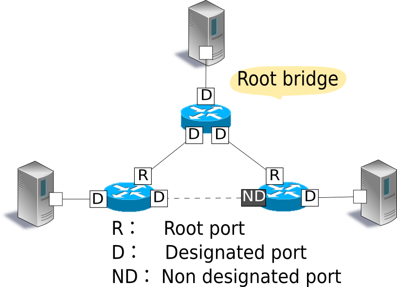

OpenFlowスイッチテストツール¶
本章では、OpenFlowスイッチのOpenFlow仕様への準拠の度合いを検証する、RyuのOpenFlowスイッチテストツールの使用方法を解説します。
テストツールの概要¶
本ツールは、テストパターンファイルに従って試験対象のOpenFlowスイッチに対してフローエントリ登録／パケット印加を実施し、OpenFlowスイッチのパケット編集や転送(または破棄)の処理結果とテストパターンファイルに記述された「期待する処理結果」の比較を行うことにより、OpenFlowスイッチのOpenFlow仕様への対応状況を検証するテストツールです。
ツールは、OpenFlowバージョン1.3のFlowModメッセージの試験に対応しています。
| 試験対象メッセージ | 対応パラメータ |
|---|---|
| OpenFlow1.3 FlowModメッセージ | match (IN_PHY_PORTを除く) actions (SET_QUEUE、GROUPを除く) |
また印加パケットとして、Ryuのパケットライブラリで定義されたプロトコルを用いることが出来ます。
動作概要¶
試験実行イメージ¶
テストツールを実行した際の動作イメージを示します。テストパターンファイルには、「登録するフローエントリ」「印加パケット」「期待する処理結果」が記述されます。また、ツール実行のための環境設定については後述(ツール実行環境を参照)します。

試験結果の出力イメージ¶
指定されたテストパターンファイルのテスト項目を順番に実行し、試験結果(OK／ERROR)を出力します。試験結果がERRORの場合はエラー詳細を併せて出力します。
--- Test start ---
match: 29_ICMPV6_TYPE
ethernet/ipv6/icmpv6(type=128)-->'icmpv6_type=128,actions=output:2' OK
ethernet/ipv6/icmpv6(type=128)-->'icmpv6_type=128,actions=output:CONTROLLER' OK
ethernet/ipv6/icmpv6(type=135)-->'icmpv6_type=128,actions=output:2' OK
ethernet/vlan/ipv6/icmpv6(type=128)-->'icmpv6_type=128,actions=output:2' ERROR
Received incorrect packet-in: ethernet(ethertype=34525)
ethernet/vlan/ipv6/icmpv6(type=128)-->'icmpv6_type=128,actions=output:CONTROLLER' ERROR
Received incorrect packet-in: ethernet(ethertype=34525)
match: 30_ICMPV6_CODE
ethernet/ipv6/icmpv6(code=0)-->'icmpv6_code=0,actions=output:2' OK
ethernet/ipv6/icmpv6(code=0)-->'icmpv6_code=0,actions=output:CONTROLLER' OK
ethernet/ipv6/icmpv6(code=1)-->'icmpv6_code=0,actions=output:2' OK
ethernet/vlan/ipv6/icmpv6(code=0)-->'icmpv6_code=0,actions=output:2' ERROR
Received incorrect packet-in: ethernet(ethertype=34525)
ethernet/vlan/ipv6/icmpv6(code=0)-->'icmpv6_code=0,actions=output:CONTROLLER' ERROR
Received incorrect packet-in: ethernet(ethertype=34525)
--- Test end ---
エラーメッセージ一覧¶
本ツールで出力されるエラーメッセージの一覧を示します。
| エラーメッセージ | 説明 |
|---|---|
| Failed to initialize flow tables: barrier request timeout. | 前回試験のフローエントリ削除に失敗(Barrier Requestのタイムアウト) |
| Failed to initialize flow tables: [err_msg] | 前回試験のフローエントリ削除に失敗(FlowModに対するErrorメッセージ受信) |
| Failed to add flows: barrier request timeout. | フローエントリ登録に失敗(Barrier Requestのタイムアウト) |
| Failed to add flows: [err_msg] | フローエントリ登録に失敗(FlowModに対するErrorメッセージ受信) |
| Added incorrect flows: [flows] | フローエントリ登録確認エラー(想定外のフローエントリが登録された) |
| Failed to add flows: flow stats request timeout. | フローエントリ登録確認に失敗(FlowStats Requestのタイムアウト) |
| Failed to add flows: [err_msg] | フローエントリ登録確認に失敗(FlowStats Requestに対するErrorメッセージ受信) |
| Failed to request port stats from target: request timeout. | 試験対象SWのPortStats取得に失敗(PortStats Requestのタイムアウト) |
| Failed to request port stats from target: [err_msg] | 試験対象SWのPortStats取得に失敗(PortStats Requestに対するErrorメッセージ受信) |
| Failed to request port stats from tester: request timeout. | 補助SWのPortStats取得に失敗(PortStats Requestのタイムアウト) |
| Failed to request port stats from tester: [err_msg] | 補助SWのPortStats取得に失敗(PortStats Requestに対するErrorメッセージ受信) |
| Received incorrect [packet] | 期待した出力パケットの受信エラー(異なるパケットを受信) |
| Receiving timeout: [detail] | 期待した出力パケットの受信に失敗(タイムアウト) |
| Faild to send packet: barrier request timeout. | パケット印加に失敗(Barrier Requestのタイムアウト) |
| Faild to send packet: [err_msg] | パケット印加に失敗(Packet-Outに対するErrorメッセージ受信) |
| Table-miss error: increment in matched_count. | table-miss確認エラー(フローにmatchしている) |
| Table-miss error: no change in lookup_count. | table-miss確認エラー(パケットが確認対象のフローテーブルで処理されていない) |
| Failed to request table stats: request timeout. | table-missの確認に失敗(TableStats Requestのタイムアウト) |
| Failed to request table stats: [err_msg] | table-missの確認に失敗(TableStats Requestに対するErrorメッセージ受信) |
使用方法¶
テストツールの使用方法を解説します。
テストパターンファイル¶
試験したいテストパターンに応じたテストパターンファイルを作成する必要があります。
テストパターンファイルは拡張子を「.json」としたテキストファイルです。以下の形式で記述します。
[
"xxxxxxxxxx", # 試験項目名
{
"description": "xxxxxxxxxx", # 試験内容の説明
"prerequisite": [
{
"OFPFlowMod": {...} # 登録するフローエントリ
}, # (RyuのOFPFlowModをjson形式で記述)
{...}, # パケット転送(actions=output)の場合は
{...} # 出力ポート番号に「2」を指定してください
],
"tests": [
{
"ingress": [ # 印加するパケット
"ethernet(...)", # (Ryuパケットライブラリのコンストラクタの形式で記述)
"ipv4(...)",
"tcp(...)"
],
# 期待する処理結果
# 処理結果の種別に応じて(a)(b)(c)のいずれかを記述
# (a) パケット転送(actions=output:X)の確認試験
"egress": [ # 期待する転送パケット
"ethernet(...)",
"ipv4(...)",
"tcp(...)"
]
# (b) パケットイン(actions=CONTROLLER)の確認試験
"PACKET_IN": [ # 期待するPacket-Inデータ
"ethernet(...)",
"ipv4(...)",
"tcp(...)"
]
# (c) table-missの確認試験
"table-miss": [ # table-missとなることを期待するフローテーブルID
0
]
},
{...},
{...}
]
}, # 試験1
{...}, # 試験2
{...} # 試験3
]
ノート
Ryuのソースツリーにはサンプルテストパターンとして、OpenFlow1.3 FlowModメッセージのmatch／actionsに指定できる各パラメータがそれぞれ正常に動作するかを確認するテストパターンファイルが用意されています。
ryu/tests/switch/of13
ツール実行環境¶
テストツール実行のための環境を構築する必要があります。
{kind=link}
補助スイッチとして、以下の動作を正常に行うことが出来るOpenFlowスイッチが必要です。
- actions=CONTROLLERのフローエントリ登録
- actions=CONTROLLERのフローエントリによるPacket-Inメッセージ送信
- Packet-Outメッセージ受信によるパケット送信
ノート
Open vSwitchを試験対象スイッチとしたツール実行環境をmininet上で実現する環境構築スクリプトが、Ryuのソースツリーに用意されています。
ryu/tests/switch/run_mininet.py
スクリプトの使用例を「テストツール使用例」に記載しています。
テストツールの実行方法¶
テストツールはRyuのソースツリー上で公開されています。
ソースコード 説明 ryu/tests/switch/tester.py テストツール ryu/tests/switch/of13 テストパターンファイルのサンプル ryu/tests/switch/run_mininet.py 試験環境構築スクリプト
テストツールは次のコマンドで実行します。
$ ryu-manager [--test-switch-target DPID] [--test-switch-tester DPID]
[--test-switch-dir DIRECTORY] ryu/tests/switch/tester.py
オプション 説明 デフォルト値 –test-switch-target 試験対象スイッチのデータパスID 0000000000000001 –test-switch-tester 補助スイッチのデータパスID 0000000000000002 –test-switch-dir テストパターンファイルのディレクトリパス ryu/tests/switch/of13
ノート
テストツールはRyuアプリケーションとしてryu.base.app_manager.RyuAppを継承して作成されているため、他のRyuアプリケーションと同様に–verboseオプションによるデバッグ情報出力等にも対応しています。
テストツールの起動後、試験対象スイッチと補助スイッチがコントローラに接続されると、指定したテストパターンファイルを元に試験が開始されます。
テストツール使用例¶
サンプルテストパターンやオリジナルのテストパターンファイルを用いたテストツールの実行手順を紹介します。
サンプルテストパターンの実行手順¶
Ryuのソースツリーのサンプルテストパターン(ryu/tests/switch/of13)を用いて、FlowModメッセージのmatch／actionsの一通りの動作確認を行う手順を示します。
本手順では、試験環境を試験環境構築スクリプト(ryu/tests/switch/run_mininet.py)を用いて構築することとします。このため試験対象スイッチはOpen vSwitchとなります。VMイメージ利用のための環境設定やログイン方法等は「スイッチングハブの実装」を参照してください。
試験環境の構築
VM環境にログインし、試験環境構築スクリプトを実行します。
ryu@ryu-vm:~$ sudo ryu/ryu/tests/switch/run_mininet.py
netコマンドの実行結果は次の通りです。
mininet> net c0 s1 lo: s1-eth1:s2-eth1 s1-eth2:s2-eth2 s2 lo: s2-eth1:s1-eth1 s2-eth2:s1-eth2
テストツール実行
テストツール実行のため、コントローラのxtermを開きます。
mininet> xterm c0
「Node: c0 (root)」のxtermから、テストツールを実行します。この際、テストパターンファイルのディレクトリとして、サンプルテストパターンのディレクトリ(ryu/tests/switch/of13)を指定します。なお、mininet環境の試験対象スイッチと補助スイッチのデータパスIDはそれぞれ–test-switch-target／–test-switch-testerオプションのデフォルト値となっているため、オプション指定を省略しています。
Node: c0:
root@ryu-vm:~$ ryu-manager --test-switch-dir ryu/ryu/tests/switch/of13 ryu/ryu/tests/switch/tester.py
ツールを実行すると次のように表示され、試験対象スイッチと補助スイッチがコントローラに接続されるまで待機します。
root@ryu-vm:~$ ryu-manager --test-switch-dir ryu/ryu/tests/switch/of13/ ryu/ryu/tests/switch/tester.py loading app ryu/ryu/tests/switch/tester.py loading app ryu.controller.ofp_handler instantiating app ryu/ryu/tests/switch/tester.py of OfTester target_dpid=0000000000000001 tester_dpid=0000000000000002 Test files directory = ryu/ryu/tests/switch/of13/ instantiating app ryu.controller.ofp_handler of OFPHandler --- Test start --- waiting for switches connection...
試験対象スイッチと補助スイッチがコントローラに接続されると、試験が開始されます。
root@ryu-vm:~$ ryu-manager --test-switch-dir ryu/ryu/tests/switch/of13/ ryu/ryu/tests/switch/tester.py loading app ryu/ryu/tests/switch/tester.py loading app ryu.controller.ofp_handler instantiating app ryu/ryu/tests/switch/tester.py of OfTester target_dpid=0000000000000001 tester_dpid=0000000000000002 Test files directory = ryu/ryu/tests/switch/of13/ instantiating app ryu.controller.ofp_handler of OFPHandler --- Test start --- waiting for switches connection... dpid=0000000000000002 : Join tester SW. dpid=0000000000000001 : Join target SW. action: 00_OUTPUT ethernet/ipv4/tcp-->'actions=output:2' OK ethernet/ipv6/tcp-->'actions=output:2' OK ethernet/arp-->'actions=output:2' OK action: 11_COPY_TTL_OUT ethernet/mpls(ttl=64)/ipv4(ttl=32)/tcp-->'eth_type=0x8847,actions=copy_ttl_out,output:2' ERROR Failed to add flows: OFPErrorMsg[type=0x02, code=0x00] ethernet/mpls(ttl=64)/ipv6(hop_limit=32)/tcp-->'eth_type=0x8847,actions=copy_ttl_out,output:2' ERROR Failed to add flows: OFPErrorMsg[type=0x02, code=0x00] ...ryu/tests/switch/of13配下の全てのサンプルテストパターンファイルの試験が完了すると、テストツールは終了します。
<参考>¶
サンプルテストパターンファイル一覧
match／actionsの各設定項目に対応するフローエントリを登録し、フローエントリにmatchする(またはmatchしない)複数パターンのパケットを印加するテストパターンが用意されています。ryu/tests/switch/of13/action: 00_OUTPUT.json 20_POP_MPLS.json 11_COPY_TTL_OUT.json 23_SET_NW_TTL_IPv4.json 12_COPY_TTL_IN.json 23_SET_NW_TTL_IPv6.json 15_SET_MPLS_TTL.json 24_DEC_NW_TTL_IPv4.json 16_DEC_MPLS_TTL.json 24_DEC_NW_TTL_IPv6.json 17_PUSH_VLAN.json 25_SET_FIELD 17_PUSH_VLAN_multiple.json 26_PUSH_PBB.json 18_POP_VLAN.json 26_PUSH_PBB_multiple.json 19_PUSH_MPLS.json 27_POP_PBB.json 19_PUSH_MPLS_multiple.json ryu/tests/switch/of13/action/25_SET_FIELD: 03_ETH_DST.json 14_TCP_DST_IPv4.json 24_ARP_SHA.json 04_ETH_SRC.json 14_TCP_DST_IPv6.json 25_ARP_THA.json 05_ETH_TYPE.json 15_UDP_SRC_IPv4.json 26_IPV6_SRC.json 06_VLAN_VID.json 15_UDP_SRC_IPv6.json 27_IPV6_DST.json 07_VLAN_PCP.json 16_UDP_DST_IPv4.json 28_IPV6_FLABEL.json 08_IP_DSCP_IPv4.json 16_UDP_DST_IPv6.json 29_ICMPV6_TYPE.json 08_IP_DSCP_IPv6.json 17_SCTP_SRC_IPv4.json 30_ICMPV6_CODE.json 09_IP_ECN_IPv4.json 17_SCTP_SRC_IPv6.json 31_IPV6_ND_TARGET.json 09_IP_ECN_IPv6.json 18_SCTP_DST_IPv4.json 32_IPV6_ND_SLL.json 10_IP_PROTO_IPv4.json 18_SCTP_DST_IPv6.json 33_IPV6_ND_TLL.json 10_IP_PROTO_IPv6.json 19_ICMPV4_TYPE.json 34_MPLS_LABEL.json 11_IPV4_SRC.json 20_ICMPV4_CODE.json 35_MPLS_TC.json 12_IPV4_DST.json 21_ARP_OP.json 36_MPLS_BOS.json 13_TCP_SRC_IPv4.json 22_ARP_SPA.json 37_PBB_ISID.json 13_TCP_SRC_IPv6.json 23_ARP_TPA.json 38_TUNNEL_ID.json ryu/tests/switch/of13/match: 00_IN_PORT.json 13_TCP_SRC_IPv4.json 25_ARP_THA.json 02_METADATA.json 13_TCP_SRC_IPv6.json 25_ARP_THA_Mask.json 02_METADATA_Mask.json 14_TCP_DST_IPv4.json 26_IPV6_SRC.json 03_ETH_DST.json 14_TCP_DST_IPv6.json 26_IPV6_SRC_Mask.json 03_ETH_DST_Mask.json 15_UDP_SRC_IPv4.json 27_IPV6_DST.json 04_ETH_SRC.json 15_UDP_SRC_IPv6.json 27_IPV6_DST_Mask.json 04_ETH_SRC_Mask.json 16_UDP_DST_IPv4.json 28_IPV6_FLABEL.json 05_ETH_TYPE.json 16_UDP_DST_IPv6.json 29_ICMPV6_TYPE.json 06_VLAN_VID.json 17_SCTP_SRC_IPv4.json 30_ICMPV6_CODE.json 06_VLAN_VID_Mask.json 17_SCTP_SRC_IPv6.json 31_IPV6_ND_TARGET.json 07_VLAN_PCP.json 18_SCTP_DST_IPv4.json 32_IPV6_ND_SLL.json 08_IP_DSCP_IPv4.json 18_SCTP_DST_IPv6.json 33_IPV6_ND_TLL.json 08_IP_DSCP_IPv6.json 19_ICMPV4_TYPE.json 34_MPLS_LABEL.json 09_IP_ECN_IPv4.json 20_ICMPV4_CODE.json 35_MPLS_TC.json 09_IP_ECN_IPv6.json 21_ARP_OP.json 36_MPLS_BOS.json 10_IP_PROTO_IPv4.json 22_ARP_SPA.json 37_PBB_ISID.json 10_IP_PROTO_IPv6.json 22_ARP_SPA_Mask.json 37_PBB_ISID_Mask.json 11_IPV4_SRC.json 23_ARP_TPA.json 38_TUNNEL_ID.json 11_IPV4_SRC_Mask.json 23_ARP_TPA_Mask.json 38_TUNNEL_ID_Mask.json 12_IPV4_DST.json 24_ARP_SHA.json 39_IPV6_EXTHDR.json 12_IPV4_DST_Mask.json 24_ARP_SHA_Mask.json 39_IPV6_EXTHDR_Mask.json
オリジナルテストパターンの実行手順¶
次に、オリジナルのテストパターンを作成してテストツールを実行する手順を示します。
例として、OpenFlowスイッチがルータ機能を実現するために必要なmatch／actionsを処理する機能を備えているかを確認するテストパターンを作成します。
テストパターンファイル作成
ルータがルーティングテーブルに従ってパケットを転送する機能を実現する以下のフローエントリが正しく動作するかを試験します。
match actions 宛先IPアドレス帯「192.168.30.0/24」 送信元MACアドレスを「aa:aa:aa:aa:aa:aa」に書き換え
宛先MACアドレスを「bb:bb:bb:bb:bb:bb」に書き換え
TTL減算
パケット転送
このテストパターンを実行するテストパターンファイルを作成します。
ファイル名：sample_test_pattern.json
[
"sample: Router test",
{
"description": "static routing table",
"prerequisite": [
{
"OFPFlowMod": {
"table_id": 0,
"match": {
"OFPMatch": {
"oxm_fields": [
{
"OXMTlv": {
"field": "eth_type",
"value": 2048
}
},
{
"OXMTlv": {
"field": "ipv4_dst",
"mask": 4294967040,
"value": "192.168.30.0"
}
}
]
}
},
"instructions":[
{
"OFPInstructionActions": {
"actions":[
{
"OFPActionSetField":{
"field":{
"OXMTlv":{
"field":"eth_src",
"value":"aa:aa:aa:aa:aa:aa"
}
}
}
},
{
"OFPActionSetField":{
"field":{
"OXMTlv":{
"field":"eth_dst",
"value":"bb:bb:bb:bb:bb:bb"
}
}
}
},
{
"OFPActionDecNwTtl":{}
},
{
"OFPActionOutput": {
"port":2
}
}
],
"type": 4
}
}
]
}
}
],
"tests":[
{
"ingress":[
"ethernet(dst='22:22:22:22:22:22',src='11:11:11:11:11:11',ethertype=2048)",
"ipv4(tos=32, proto=6, src='192.168.10.10', dst='192.168.30.10', ttl=64)",
"tcp(dst_port=2222, option='\\x00\\x00\\x00\\x00', src_port=11111)",
"'\\x01\\x02\\x03\\x04\\x05\\x06\\x07\\x08\\t\\n\\x0b\\x0c\\r\\x0e\\x0f'"
],
"egress":[
"ethernet(dst='bb:bb:bb:bb:bb:bb',src='aa:aa:aa:aa:aa:aa',ethertype=2048)",
"ipv4(tos=32, proto=6, src='192.168.10.10', dst='192.168.30.10', ttl=63)",
"tcp(dst_port=2222, option='\\x00\\x00\\x00\\x00', src_port=11111)",
"'\\x01\\x02\\x03\\x04\\x05\\x06\\x07\\x08\\t\\n\\x0b\\x0c\\r\\x0e\\x0f'"
]
}
]
}
]
試験環境構築
試験環境構築スクリプトを用いて試験環境を構築します。手順はサンプルテストパターンの実行手順を参照してください。
テストツール実行
コントローラのxtermから、先ほど作成したオリジナルのテストパターンファイルを指定してテストツールを実行します。なお、–test-switch-dirオプションはディレクトリだけでなくファイルを直接指定することも可能です。また、送受信パケットの内容を確認するため–verboseオプションを指定しています。
Node: c0:
root@ryu-vm:~$ ryu-manager --verbose --test-switch-dir ./sample_test_pattern.json ryu/ryu/tests/switch/tester.py
試験対象スイッチと補助スイッチがコントローラに接続されると、試験が開始されます。
「dpid=0000000000000002 : receive_packet...」のログ出力から、テストパターンファイルのegressパケットとして設定した、期待する出力パケットが送信されたことが分かります。なお、ここではテストツールが出力したログのみを抜粋しています。
root@ryu-vm:~$ ryu-manager --verbose --test-switch-dir ./sample_test_pattern.json ryu/ryu/tests/switch/tester.py loading app ryu/tests/switch/tester.py loading app ryu.controller.ofp_handler instantiating app ryu.controller.ofp_handler of OFPHandler instantiating app ryu/tests/switch/tester.py of OfTester target_dpid=0000000000000001 tester_dpid=0000000000000002 Test files directory = ./sample_test_pattern.json --- Test start --- waiting for switches connection... dpid=0000000000000002 : Join tester SW. dpid=0000000000000001 : Join target SW. sample: Router test send_packet:[ethernet(dst='22:22:22:22:22:22',ethertype=2048,src='11:11:11:11:11:11'), ipv4(csum=53560,dst='192.168.30.10',flags=0,header_length=5,identification=0,offset=0,option=None,proto=6,src='192.168.10.10',tos=32,total_length=59,ttl=64,version=4), tcp(ack=0,bits=0,csum=33311,dst_port=2222,offset=6,option='\x00\x00\x00\x00',seq=0,src_port=11111,urgent=0,window_size=0), '\x01\x02\x03\x04\x05\x06\x07\x08\t\n\x0b\x0c\r\x0e\x0f'] egress:[ethernet(dst='bb:bb:bb:bb:bb:bb',ethertype=2048,src='aa:aa:aa:aa:aa:aa'), ipv4(csum=53816,dst='192.168.30.10',flags=0,header_length=5,identification=0,offset=0,option=None,proto=6,src='192.168.10.10',tos=32,total_length=59,ttl=63,version=4), tcp(ack=0,bits=0,csum=33311,dst_port=2222,offset=6,option='\x00\x00\x00\x00',seq=0,src_port=11111,urgent=0,window_size=0), '\x01\x02\x03\x04\x05\x06\x07\x08\t\n\x0b\x0c\r\x0e\x0f'] packet_in:[] dpid=0000000000000002 : receive_packet[ethernet(dst='bb:bb:bb:bb:bb:bb',ethertype=2048,src='aa:aa:aa:aa:aa:aa'), ipv4(csum=53816,dst='192.168.30.10',flags=0,header_length=5,identification=0,offset=0,option=None,proto=6,src='192.168.10.10',tos=32,total_length=59,ttl=63,version=4), tcp(ack=0,bits=0,csum=33311,dst_port=2222,offset=6,option='\x00\x00\x00\x00',seq=0,src_port=11111,urgent=0,window_size=0), '\x01\x02\x03\x04\x05\x06\x07\x08\t\n\x0b\x0c\r\x0e\x0f'] static routing table OK --- Test end ---実際にOpenFlowスイッチに登録されたフローエントリは以下の通りです。テストツールによって印加されたパケットがフローエントリにmatchし、n_packetsがカウントアップされていることが分かります。
Node: s1:
root@ryu-vm:~# ovs-ofctl -O OpenFlow13 dump-flows s1 OFPST_FLOW reply (OF1.3) (xid=0x2): cookie=0x0, duration=56.217s, table=0, n_packets=1, n_bytes=73, priority=0,ip,nw_dst=192.168.30.0/24 actions=set_field:aa:aa:aa:aa:aa:aa->eth_src,set_field:bb:bb:bb:bb:bb:bb->eth_dst,dec_ttl,output:2